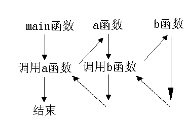

在主调函数中调用某函数之前应对该被调函数进行说明（声明），这与使用变量之前要先进行变量说明是一样的。在主调函数中对被调函数作说明的目的是使编译系统知道被调函数返回值的类型，以便在主调函数中按此种类型对返回值作相应的处理。
其一般形式为：
类型说明符 被调函数名(类型 形参，类型 形参…)；
或为：
类型说明符 被调函数名(类型，类型…)；
括号内给出了形参的类型和形参名，或只给出形参类型。这便于编译系统进行检错，以防止可能出现的错误。
例8.1 main函数中对max函数的说明为：
int max(int a,int b);
或写为:
int max(int,int)；
Ｃ语言中又规定在以下几种情况时可以省去主调函数中对被调函数的函数说明。
1) 如果被调函数的返回值是整型或字符型时，可以不对被调函数作说明，而直接调用。这时系统将自动对被调函数返回值按整型处理。例8.2的主函数中未对函数s作说明而直接调用即属此种情形。
2) 当被调函数的函数定义出现在主调函数之前时，在主调函数中也可以不对被调函数再作说明而直接调用。例如例8.1中，函数max的定义放在main 函数之前，因此可在main函数中省去对max函数的函数说明int max(int a,int b)。
3) 如在所有函数定义之前，在函数外预先说明了各个函数的类型，则在以后的各主调函数中，可不再对被调函数作说明。例如：
char str(int a);
float f(float b);
main()
{
……
}
char str(int a)
{
……
}
float f(float b)
{
……
}
其中第一，二行对str函数和f函数预先作了说明。因此在以后各函数中无须对str和f函数再作说明就可直接调用。
4) 对库函数的调用不需要再作说明，但必须把该函数的头文件用include命令包含在源文件前部。
Ｃ语言中不允许作嵌套的函数定义。因此各函数之间是平行的，不存在上一级函数和下一级函数的问题。但是Ｃ语言允许在一个函数的定义中出现对另一个函数的调用。这样就出现了函数的嵌套调用。即在被调函数中又调用其它函数。这与其它语言的子程序嵌套的情形是类似的。其关系可表示如图。

图表示了两层嵌套的情形。其执行过程是：执行main函数中调用a函数的语句时，即转去执行a函数，在a函数中调用b 函数时，又转去执行b函数，b函数执行完毕返回a函数的断点继续执行，a函数执行完毕返回main函数的断点继续执行。
本题可编写两个函数，一个是用来计算平方值的函数f1，另一个是用来计算阶乘值的函数f2。主函数先调f1计算出平方值，再在f1中以平方值为实参，调用 f2计算其阶乘值，然后返回f1，再返回主函数，在循环程序中计算累加和。
long f1(int p)
{
int k;
long r;
long f2(int);
k=p*p;
r=f2(k);
return r;
}
long f2(int q)
{
long c=1;
int i;
for(i=1;i<=q;i++)
c=c*i;
return c;
}
main()
{
int i;
long s=0;
for (i=2;i<=3;i++)
s=s+f1(i);
printf("\ns=%ld\n",s);
}
在程序中，函数f1和f2均为长整型，都在主函数之前定义，故不必再在主函数中对f1和f2加以说明。在主程序中，执行循环程序依次把i值作为实参调用函数f1求i2值。在f1中又发生对函数f2的调用，这时是把i2的值作为实参去调f2，在f2 中完成求i2!的计算。f2执行完毕把C值(即i2!)返回给f1，再由f1返回主函数实现累加。至此，由函数的嵌套调用实现了题目的要求。由于数值很大，所以函数和一些变量的类型都说明为长整型，否则会造成计算错误。